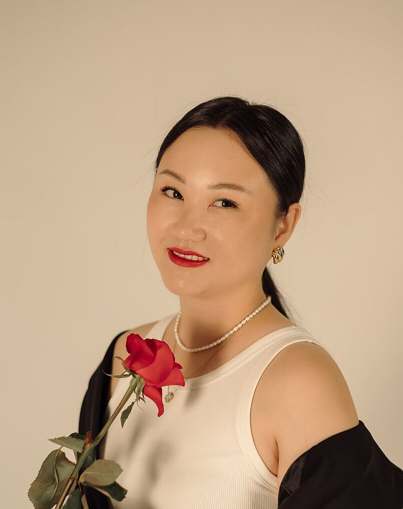
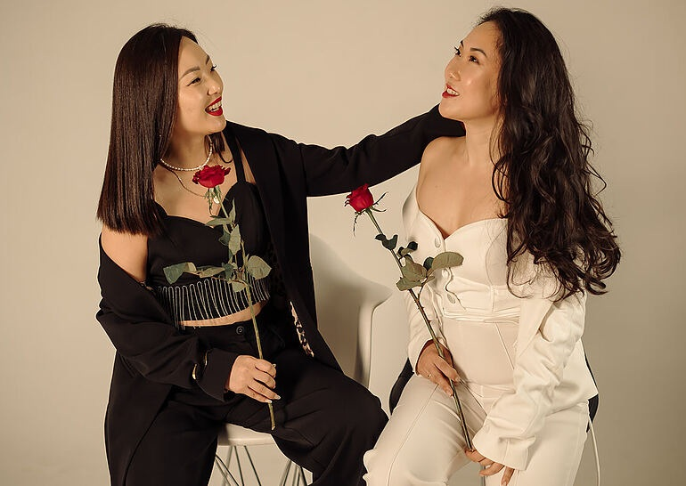
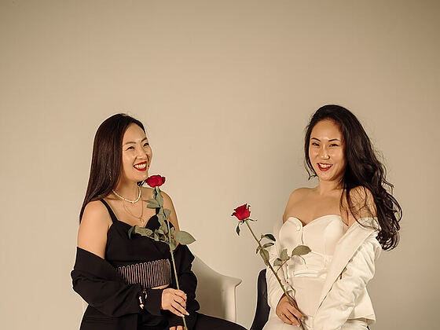
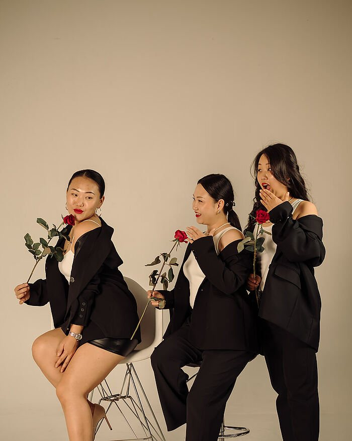
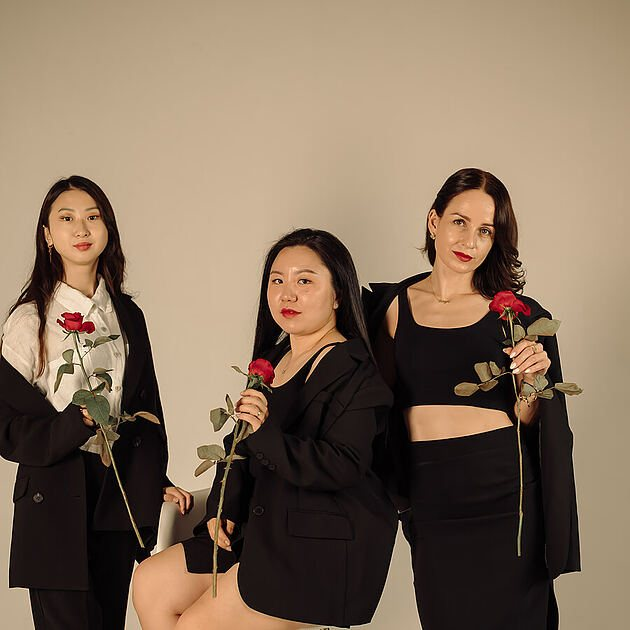
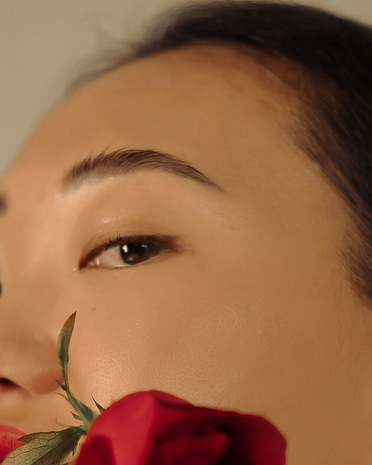
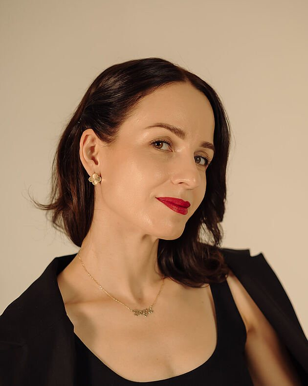
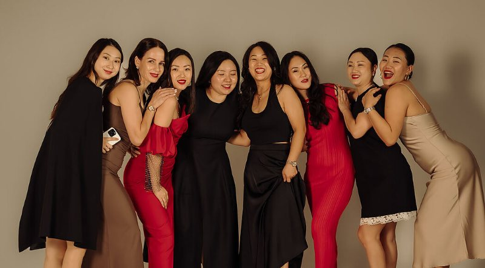
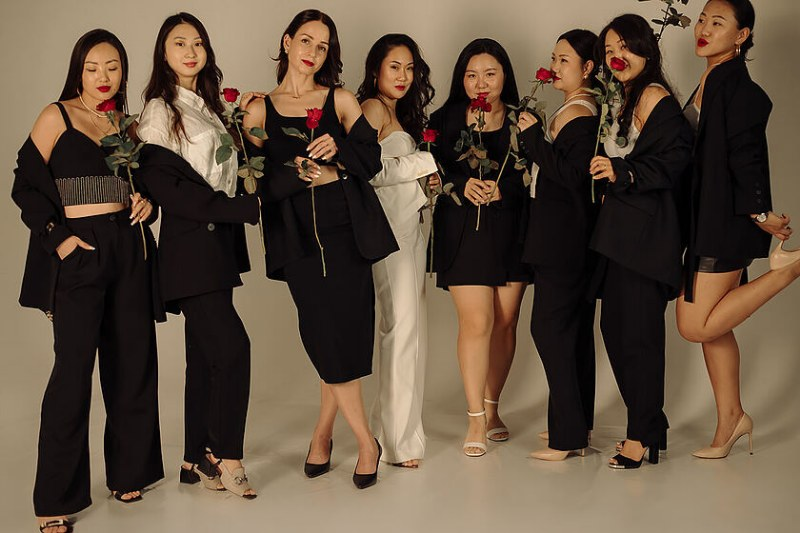

Живые встречи
Регулярные встречи участниц и мероприятия в Ташкенте — не онлайн-эфиры, а один стол и разговор.

Ташкент · закрытое сообщество · приём по заявке
Сообщество женщин, которые растят детей и одновременно растят дело, блог, профессию и себя. Встречи вживую, эксперты, окружение, которое тянет вперёд.
Почему мы это делаем
Мама — не единственная роль женщины. Она остаётся женщиной, профессионалом, предпринимателем, автором, партнёром, подругой, собой — ии мамой одновременно.
О сообществе

S.H.E. — пространство, где мама развивается: получает знания, находит поддержку и создаёт себе новые возможности.
Можно начать с нуля. Можно прийти с блогом, делом или профессией. Можно пока не знать, с чего начать.
Единственное условие — желание пробовать и действовать.
Внутри
Здесь можно не только слушать и читать. Можно знакомиться, задавать вопросы, пробовать новое, получать поддержку и превращать знания в действия.
Регулярные встречи участниц и мероприятия в Ташкенте — не онлайн-эфиры, а один стол и разговор.
Психологи, коучи, специалисты по финансам, здоровью, личному бренду и бизнесу.
Не только знания, но и конкретные действия и задания.
Женщины, которые тоже хотят развиваться.
Можно не только получать знания, но и делиться своим.
Знакомства, идеи, проекты, коллаборации и направления, которых до этого не было в поле зрения.
Как это работает
Эксперт здесь не просто выступает перед аудиторией. Участницы задают вопросы, обсуждают свои ситуации и применяют полученное в жизни.
Направления
Отношения, эмоциональный ресурс, уверенность в себе и способность выдерживать собственные амбиции.
Питание, движение, сон и восстановление — то, без чего всё остальное быстро заканчивается.
Контент, аудитория, регулярность и системный подход вместо хаотичных сторис.
Позиционирование, репутация и то, как о тебе говорят, когда тебя нет в комнате.
Своё дело, возвращение в профессию, первые деньги и следующая ступень.
Личный бюджет, накопления, финансовая грамотность и самостоятельность в деньгах.
Практические инструменты и умения, которые можно применить уже на следующей неделе.
Знакомства, обмен опытом, клиенты и проекты, которые появляются из разговоров.
Жизнь внутри
Знания есть в интернете. Окружения там нет. Сложнее всего найти женщин, которые понимают твои цели, не обесценивают их и сами двигаются.




Эксперты
Мы зовём специалистов, но встреча не заканчивается выступлением: можно спросить, поспорить, принести свой случай и уйти с решением, а не с конспектом.

Психология и состояние
Разбирает не «как быть счастливой», а конкретное: вина за время на себя, страх заявить о цене, отношения, в которых развитие мешает.
Задать вопрос экспертуФинансы
Личный бюджет, подушка, первые накопления и разговор о деньгах в семье — на цифрах, а не на мотивации.
Узнать о ближайшей встречеСостав экспертов меняется от сезона к сезону — расписание приходит участницам заранее.

Истории
Я долго думала, что сначала нужно разобраться с ребёнком, а уже потом заниматься собой. Оказалось, этого «потом» можно ждать бесконечно.
Я пришла ради знакомств, а в итоге начала развивать свой блог и впервые за долгое время почувствовала, что двигаюсь вперёд.
Афиша

Женский вечер
Вечерний формат без программы и презентаций: восемь-десять женщин, длинный стол и разговор, который обычно не с кем вести.
Вступить и попасть на встречуS.H.E. не требует прийти уже реализованной. Важно желание развиваться и готовность действовать.
Не нужно
Нужно только
желание развиваться
+
готовность действовать
Кому подходит
Будет плюсом, но не обязательно
Это не кастинг. Мы смотрим на ценности и готовность участвовать, а не на статус.
Правила
Чтобы внутри было комфортно и полезно, мы договорились о простых правилах взаимодействия.
Полный свод — восемь правил
Членский взнос покрывает встречи, работу экспертов и организацию сообщества. Размер и периодичность обсуждаем на разговоре после заявки.
Сообщество работает, когда участницы приходят, говорят и делают. Молчаливое присутствие не даёт ничего ни тебе, ни остальным.
Подтверждая участие во встрече или задании, участница берёт ответственность за своё присутствие и результат.
Жизнь бывает сложнее планов. При серьёзных обстоятельствах встречу можно пропустить — достаточно сказать заранее.
При выходе из сообщества членский взнос не возвращается.
Контакты, знания, клиенты, идеи. Если можешь помочь другой участнице — помогаешь.
Оскорбления, обесценивание и снисходительный тон в сообществе не допускаются.
Постоянное отсутствие или нарушение правил может стать основанием для выхода из сообщества.
Дальше
Короткая анкета: чем ты занята сейчас и что хочешь развивать.
Созваниваемся или встречаемся, рассказываем про формат, взнос и ближайшие встречи. Здесь же отвечаем на твои вопросы.
Приходишь, знакомишься с участницами и решаешь, твоё это или нет.